Free to forkNo licence and no copyright claim: build this game under your own name, or lift one idea from it. Why?
Game overview
Planetary Ring Miner is a brick breaker with the ball taken out. You fly a wide mining ship along the bottom of the screen, like the paddle in Arkanoid, and blast upward with its guns into exotic asteroids made of falling-sand pixels. The rock crumbles into grains, liquid and gas that rain down toward you.
Some of what falls is worth catching on the ship's flat deck: energy crystals that power up your guns, ores to bring home. Some of it is dangerous and better shot down. Whatever slips past the ship falls into the planet's atmosphere and burns up.
Back home, your hauls go into new equipment and into the development of a whole star sector, a map of stations, trade lanes and outposts that grows a little with every campaign, and that you can name, flag and share.
Target audience
Fans of brick breakers and falling-sand toys, and people who love watching something they built slowly grow, the way a bonsai or a city builder does.
Brick breakers run out of levels; falling-sand toys never had a goal. These players want a satisfying, crumbly session that adds up to something.
The mouse flies the ship and fires; three keys handle the tractor beam and consumables.
Game's purpose
Enjoyment: the tactile pleasure of solid rock crumbling into streams of pixels.
Creation and growth: a backwater sector turned, run by run, into a thriving network of your own design.
Choice: every campaign is picked from a grid of how intense and how long you want it to be.
It avoids draining rest (a relaxing, short campaign is always on offer) and autonomy (you choose where the sector grows, or let the game place it).
Core concept
A brick breaker is a list of levels that ends. Here, campaigns are generated without end, and each one leaves something permanent behind: a new lane or station on the sector map.
The map is an artwork the player paints just by playing, and it's theirs to export and show.
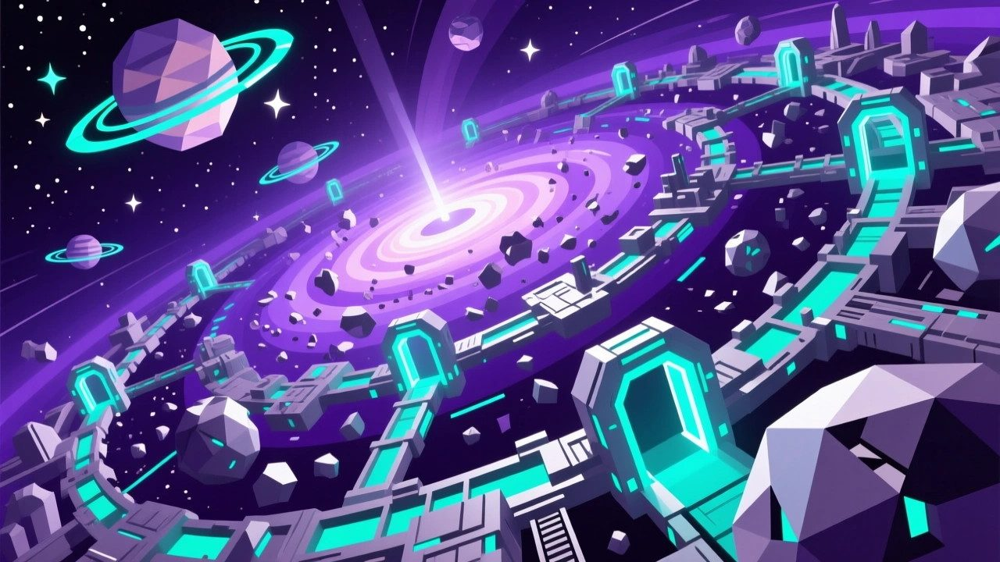
"Every campaign's haul adds something to the sector: a trade lane, a station, a relay, a shipyard."
Lore and story
The ring
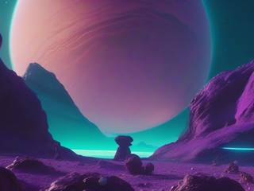
An exoplanet on the edge of a young colonial sector is circled by a ring of exotic rock in low orbit. The rocks hold materials the colonies' industry needs, and nobody can get at them safely by hand: up close, the ring is too dangerous.
The gleaner
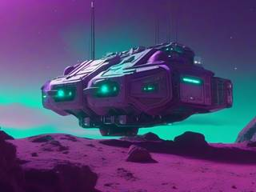
So the work is done by remote-operated robot ships called gleaners: a long, flat rectangular hull with a blaster at each end, a wide deck on top that catches whatever falls onto it, and two big thrusters underneath that hold it in orbit. You're one of the operators, flying a gleaner from far away.
The net
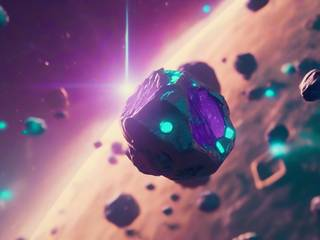
Each mining site is boxed in by a forcefield net, open only at the bottom. It keeps stray shots and exploding debris from flying off into space, and makes everything else fall downward, past the gleaner, toward the planet. The gleaner is programmed to stay a few meters below the lowest rock, for its own safety.
The job right now
Clear this cluster of mining sites, catch as much as you can, and bring it home, where it becomes equipment for you and infrastructure for the whole sector.
Controls and interface
The mouse moves the gleaner directly, anywhere in a box from the bottom of the site up to the safety line below the lowest rock. Its guns always point straight up, so aiming means getting underneath what you want to hit.
Fly
Mouse
Move the gleaner within the safe zone
Fire
Mouse 1
The weapon's main fire
Mouse 2
Its alternative fire
Wheel
Switch between the three equipped weapons
Tractor beam
Hold D
Pull nearby crystals and ore toward the ship
Consumables
A
Select the next consumable
S
Use the selected one
A standard blaster's shot can be detonated mid-flight with a second click, to catch the loose pixels that are hard to hit directly. Other weapons have their own main and alternative modes, but every weapon has one for big chunks and one for stragglers.
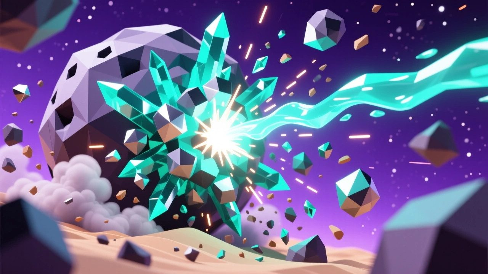
"Blasted rock doesn't vanish: it breaks into gas, liquid or loose grains that drift and fall for a few seconds."
Game layers
01 · Moment-to-moment
One mining site
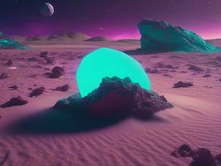
A generated asteroid of several exotic materials hangs at the top of the net. You slide under it and fire, carving it away pixel by pixel, while the debris rains down: catch the crystals and ore, dodge or shoot the hazards.
The site is done when no solid rock is left and you've caught what's still falling. As the rock gets cleared, the safety line rises, and you can follow it up.
02 · Low metagame
A campaign: one cluster of sites
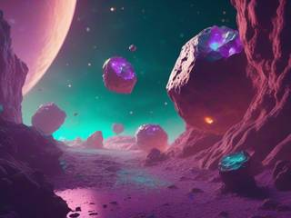
A campaign is a cluster of 5 to 15 mining sites, each a fresh, randomly generated asteroid. You launch with the loadout you chose at home, three weapons and up to six kinds of consumable, and bring the haul back at the end.
If the gleaner is wrecked by a hazard, a replacement is sent out and the campaign carries on, but whatever was in the wrecked ship's hold at that site is lost.
03 · High metagame
Home base and the sector
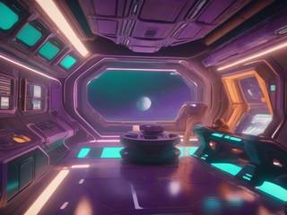
Home is a menu of four tabs: the ring map, where nine new campaigns are always waiting; the inventory of your base and your ship's loadout; the workshop and shop, where what you brought home turns into equipment, consumables and contributions; and the sector map, which grows with every campaign.
The ring never runs out of rock, and the sector never runs out of room to grow.
04 · Practical game flow
As long or short as you like
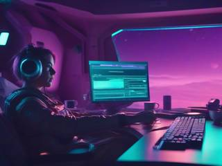
You choose the session before it starts: a short, medium or long campaign, at a low, medium or high intensity. A site takes a few minutes. The game saves between sites, so a long campaign can be spread over several evenings.
Game modes
There's one mode: working the ring, campaign after campaign, with the sector growing behind you. It nests like this:
The sectorEndless: a map that grows a little with every campaign.
A campaignA cluster of 5 to 15 sites, at the length and intensity you chose.
A mining siteOne generated asteroid: a few minutes.
A chunkBlast it, watch it crumble, catch what falls.
Features and mechanics
The heart of it
A sector you grow like a bonsai
The sector map is a simple, flat, scrollable and zoomable 2D map in the style of Master of Orion: bright circles for stars, smaller muted ones for planets, gas giants and moons, and some space terrain like nebulae and gravitational rivers, so it isn't just black.
What you bring home from each campaign decides how much the sector can grow. You pick a spot and build: a line for a trade lane between stars or planets, or a node (a diamond, square or triangle) for a station, shipyard, outpost, gas-mining fleet, relay, jump gate, megastructure or a planet-wide development. Each is color-coded by sector of the economy: civilian, research, logistics, mining, farming, industry, military. Or press one button and let the game place it for you.
Over many campaigns, a backwater turns into a dense, vibrant network. You can name the star system, design its flag, read a log of everything built and what it's called, and export the map as an image or SVG to share.
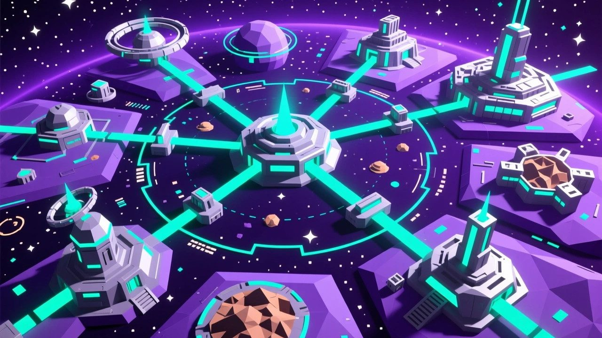
"What each campaign brings home decides how much the sector map grows: new lanes, stations and outposts."
Falling sand, upside down
Rock that crumbles
The asteroids are static and solid until they're hit. Then, depending on their material and their randomly assigned color, the hit pixels turn into gas, liquid or loose grains, pushed by whatever force the weapon imparts, and fade away after two to six seconds, depending on the material.
So a big blast doesn't just remove rock: it throws a shower of pixels around the site, and what breaks loose can knock other things loose too. Clearing an asteroid is as much about where you hit it as how hard.
One pixel in twenty
What falls out
Every destroyed pixel has a 5% chance to release something:
Drop
What it is
What to do
Energy crystal
Volatile crystals the gleaner converts into abilities, as temporary boosts or consumables
Catch it on the deck
Valuable ore
Material for equipment and the sector's growth
Catch it, or pull it in with the tractor beam
Hazard
Dangerous debris or an anomaly that damages the ship
Dodge it, or shoot it down
Some sites have space weather: a solar wind of random strength and direction that pushes falling debris left or right as it comes down.
Pick your evening
Nine campaigns on the ring map
The ring map always offers nine fresh clusters, laid out as a three-by-three grid of intensity against length, so you can pick exactly the session you're in the mood for:
Intensity
Short
Medium
Long
Low
A quick, calm haul
An easy evening
A long, relaxing shift
Medium
A brisk run
The standard job
A proper expedition
High
A sharp burst
A hard shift
The deep end
Nothing is locked: the long, intense ones are there from the start for those who want them.
Nothing lasts forever
Gear that wears out
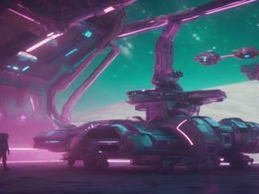
You'll usually have six to nine weapons and upgrades in the base inventory, and take three on each campaign. Each one you take loses a point of durability; after a set number of campaigns it fails and goes to scrap, which feeds the sector's industry. Only the default blaster never breaks, so you're never left without a gun.
The workshop builds replacements from the materials you deliver, so the kit keeps turning over naturally and you keep trying different weapons rather than settling on one forever. The limit is material, not a timer or a lock.
Big base, small ship
Loadout and consumables
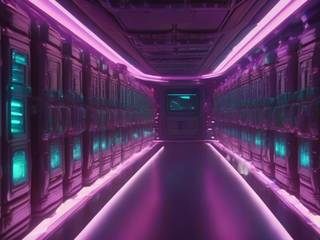
Like an extraction game, there's a big inventory at home and a small one on the ship. Before each campaign you choose what goes up: the three weapons and up to six kinds of consumable, nine of each, which you can trigger whenever you like, unlike the crystals caught in the field, which take effect at once.
Part of each haul is yours to spend at the base shop on consumables and boosts for the next campaign. The rest goes to the sector's projects, and you can donate spare consumables to them too.
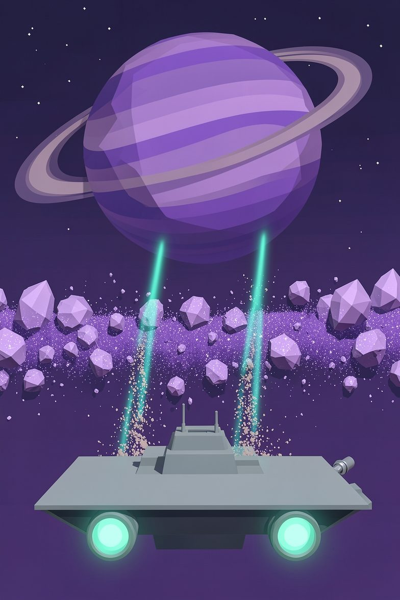
Now hiring: remote gleaner operators
Planetary Ring Miner: Falling Sand Mining
The ring is full of what the colonies need, and it's too dangerous to touch. That's what the gleaners are for. You fly one from a safe chair, blast the rock from below, and catch what falls on the deck.
Every load you bring home builds something out there: a lane between two stars, a shipyard, a relay at the edge of the map. In a year, the sector won't look like the same place. Name it something good.